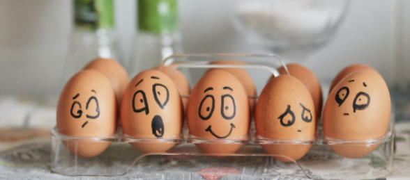

Все
Все

Эмоциональное выгорание - стадии и симптомы, методы восстановления и профилактики
Изначально термин «эмоциональное профессиональной сфере и относился...
21.08.2021
Как не утонуть в тревоге и управлять своими страхами
Один из самых важных навыков, которые может дать работа с психотерапевтом - умение в разных ситуациях по-разному обходиться ...
11.08.2021